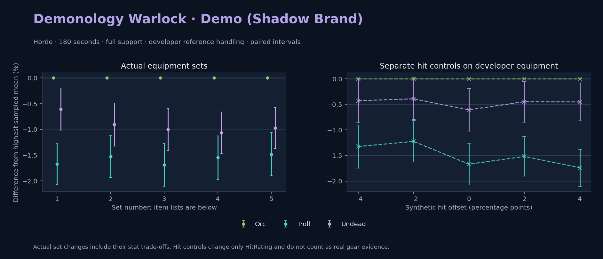

Horde · Orc / Troll / Undead

Pets / guardians: Imp, Voidwalker, Succubus, Felhunter · 138.0 DPS (18.6% of total). Reference: Orc, developer equipment, 180 seconds and full support. Pet choices remain those of the developer build.
WoWSims developer · Pre-raid (baseline fallback)
Unimplemented item effects: [{"id": 14153, "name": "Robe of the Void", "effects": ["Heal your pet for 600."]}]
Unimplemented enchant or active set effects: [{"id": 183, "pieces": 4, "effects": ["When struck in combat has a 2% chance of causing the attacker to flee in terror for 2s. Can only occur once every 60 sec."]}]
180 seconds, full support and original developer references. Hit below is generic sheet melee / spell hit; school and talent bonuses can be attached directly to spells.
| Race | DPS | Gap and interval | Generic hit | Replay |
|---|---|---|---|---|
| Orc | 739.94 | +0.000% ± 0.000 | 3.0% / 3.0% | Native input · Website JSON |
| Undead | 735.45 | -0.607% ± 0.408 | 3.0% / 3.0% | Native input · Website JSON |
| Troll | 727.58 | -1.670% ± 0.404 | 3.0% / 3.0% | Native input · Website JSON |
| Slot | Item | ID | Enchant |
|---|---|---|---|
| Head | Dreadmist Mask | 16698 | |
| Neck | Beads of Ogre Mojo | 22149 | |
| Shoulder | Dreadmist Mantle | 16701 | |
| Back | Arcanoweave Cloak | 272411 | |
| Chest | Robe of the Void | 14153 | |
| Wrist | Dreadmist Bracers | 16703 | |
| Hands | Dreadmist Wraps | 16705 | |
| Waist | Dreadmist Belt | 16702 | |
| Legs | Dreadmist Leggings | 16699 | |
| Feet | Dreadmist Sandals | 16704 | |
| Ring 1 | Jereman's Bauble | 275738 | |
| Ring 2 | Advisor's Ring | 19518 | |
| Trinket 1 | Weakness Analyzer | 272438 | |
| Trinket 2 | Jewel of the Guard Captain | 270225 | |
| Main hand | Darkspear Insurgent's Spellblade | 272083 | |
| Off hand | Truesilver Conduit | 249455 | |
| Ranged / relic | Lunar Wand | 15283 |
Published ranked alternatives · Published pre-raid
Recorded source replacements: [{"slot": "feet", "from": 11822, "to": 275606, "publishedAlternativeRank": 1, "publishedEpDelta": -0.2, "reason": "First published alternative compatible with the current WoWSims database, class, faction and occupied slots."}]
180 seconds, full support and original developer references. Hit below is generic sheet melee / spell hit; school and talent bonuses can be attached directly to spells.
| Race | DPS | Gap and interval | Generic hit | Replay |
|---|---|---|---|---|
| Orc | 852.93 | +0.000% ± 0.000 | 4.7% / 4.7% | Native input · Website JSON |
| Undead | 845.21 | -0.905% ± 0.418 | 4.7% / 4.7% | Native input · Website JSON |
| Troll | 839.92 | -1.526% ± 0.411 | 4.7% / 4.7% | Native input · Website JSON |
| Slot | Item | ID | Enchant |
|---|---|---|---|
| Head | Dreamweave Circlet | 10041 | Arcanum of Focus |
| Neck | Archlight Talisman | 15856 | Enchant Necklace - Spell Power |
| Shoulder | Mantle of the Timbermaw | 19050 | |
| Back | Arcanoweave Cloak | 272411 | |
| Chest | Robe of Winter Night | 14136 | Mystic Rugged Armor Kit |
| Wrist | Runecloth Cuffs | 254123 | Enchant Bracer - Greater Spellpower |
| Hands | Gloves of Spell Mastery | 14146 | Enchant Gloves - Minor Haste |
| Waist | Belt of the Archmage | 18405 | |
| Legs | Ghostweave Pants | 14144 | Arcanum of Focus |
| Feet | Venomspew Footpads | 275606 | Mystic Rugged Armor Kit |
| Ring 1 | Blessed Band of Light | 272407 | |
| Ring 2 | Maiden's Circle | 13001 | |
| Trinket 1 | Weakness Analyzer | 272438 | |
| Trinket 2 | Rune of the Guard Captain | 19120 | |
| Main hand | Sageblade | 22383 | |
| Off hand | Spirit of Aquementas | 11904 | Enchant Off-Hand - Superior Intellect |
| Ranged / relic | Greater Eternal Wand | 249237 |
Published one-slot hit alternative · Published pre-raid
One source-listed alternative; at least 80% of the source slot score retained. Reported hit selects the contrast; only native stats determine simulation outcomes. This is an experimental combination, not an endorsed best set.
Recorded source replacements: [{"slot": "feet", "from": 11822, "to": 275606, "publishedAlternativeRank": 1, "publishedEpDelta": -0.2, "reason": "First published alternative compatible with the current WoWSims database, class, faction and occupied slots."}]
180 seconds, full support and original developer references. Hit below is generic sheet melee / spell hit; school and talent bonuses can be attached directly to spells.
| Race | DPS | Gap and interval | Generic hit | Replay |
|---|---|---|---|---|
| Orc | 852.41 | +0.000% ± 0.000 | 5.7% / 5.7% | Native input · Website JSON |
| Undead | 843.89 | -1.000% ± 0.409 | 5.7% / 5.7% | Native input · Website JSON |
| Troll | 838.03 | -1.688% ± 0.416 | 5.7% / 5.7% | Native input · Website JSON |
| Slot | Item | ID | Enchant |
|---|---|---|---|
| Head | Dreamweave Circlet | 10041 | Arcanum of Focus |
| Neck | Archlight Talisman | 15856 | Enchant Necklace - Spell Power |
| Shoulder | Mantle of the Timbermaw | 19050 | |
| Back | Arcanoweave Cloak | 272411 | |
| Chest | Robe of Winter Night | 14136 | Mystic Rugged Armor Kit |
| Wrist | Runecloth Cuffs | 254123 | Enchant Bracer - Greater Spellpower |
| Hands | Gloves of Spell Mastery | 14146 | Enchant Gloves - Minor Haste |
| Waist | Belt of the Archmage | 18405 | |
| Legs | Ghostweave Pants | 14144 | Arcanum of Focus |
| Feet | Venomspew Footpads | 275606 | Mystic Rugged Armor Kit |
| Ring 1 | Blessed Band of Light | 272407 | |
| Ring 2 | Channeler's Ring | 272406 | |
| Trinket 1 | Weakness Analyzer | 272438 | |
| Trinket 2 | Rune of the Guard Captain | 19120 | |
| Main hand | Sageblade | 22383 | |
| Off hand | Spirit of Aquementas | 11904 | Enchant Off-Hand - Superior Intellect |
| Ranged / relic | Greater Eternal Wand | 249237 |
Published ranked alternatives · Published pre-raid
Recorded source replacements: [{"slot": "shoulder", "from": 227808, "to": 19050, "publishedAlternativeRank": 1, "publishedEpDelta": -10.6, "reason": "First published alternative compatible with the current WoWSims database, class, faction and occupied slots."}, {"slot": "waist", "from": 228190, "to": 18405, "publishedAlternativeRank": 1, "publishedEpDelta": -10.4, "reason": "First published alternative compatible with the current WoWSims database, class, faction and occupied slots."}, {"slot": "feet", "from": 11822, "to": 275606, "publishedAlternativeRank": 1, "publishedEpDelta": -0.2, "reason": "First published alternative compatible with the current WoWSims database, class, faction and occupied slots."}]
Unimplemented item effects: [{"id": 14153, "name": "Robe of the Void", "effects": ["Heal your pet for 600."]}]
180 seconds, full support and original developer references. Hit below is generic sheet melee / spell hit; school and talent bonuses can be attached directly to spells.
| Race | DPS | Gap and interval | Generic hit | Replay |
|---|---|---|---|---|
| Orc | 868.09 | +0.000% ± 0.000 | 4.9% / 4.9% | Native input · Website JSON |
| Undead | 858.85 | -1.064% ± 0.406 | 4.9% / 4.9% | Native input · Website JSON |
| Troll | 854.64 | -1.550% ± 0.424 | 4.9% / 4.9% | Native input · Website JSON |
| Slot | Item | ID | Enchant |
|---|---|---|---|
| Head | Dreamweave Circlet | 10041 | Arcanum of Focus |
| Neck | Archlight Talisman | 15856 | Enchant Necklace - Spell Power |
| Shoulder | Mantle of the Timbermaw | 19050 | |
| Back | Arcanoweave Cloak | 272411 | |
| Chest | Robe of the Void | 14153 | Mystic Rugged Armor Kit |
| Wrist | Runecloth Cuffs | 254123 | Enchant Bracer - Greater Spellpower |
| Hands | Gloves of Spell Mastery | 14146 | Enchant Gloves - Minor Haste |
| Waist | Belt of the Archmage | 18405 | |
| Legs | Ghostweave Pants | 14144 | Arcanum of Focus |
| Feet | Venomspew Footpads | 275606 | Mystic Rugged Armor Kit |
| Ring 1 | Blessed Band of Light | 272407 | |
| Ring 2 | Maiden's Circle | 13001 | |
| Trinket 1 | Weakness Analyzer | 272438 | |
| Trinket 2 | Frozen Heart of the Mountain | 249469 | |
| Main hand | Sageblade | 22383 | |
| Off hand | Spirit of Aquementas | 11904 | Enchant Off-Hand - Superior Intellect |
| Ranged / relic | Brilliant Wand | 249385 |
Published one-slot hit alternative · Published pre-raid
One source-listed alternative; at least 80% of the source slot score retained. Reported hit selects the contrast; only native stats determine simulation outcomes. This is an experimental combination, not an endorsed best set.
Recorded source replacements: [{"slot": "shoulder", "from": 227808, "to": 19050, "publishedAlternativeRank": 1, "publishedEpDelta": -10.6, "reason": "First published alternative compatible with the current WoWSims database, class, faction and occupied slots."}, {"slot": "waist", "from": 228190, "to": 18405, "publishedAlternativeRank": 1, "publishedEpDelta": -10.4, "reason": "First published alternative compatible with the current WoWSims database, class, faction and occupied slots."}, {"slot": "feet", "from": 11822, "to": 275606, "publishedAlternativeRank": 1, "publishedEpDelta": -0.2, "reason": "First published alternative compatible with the current WoWSims database, class, faction and occupied slots."}]
Unimplemented item effects: [{"id": 14153, "name": "Robe of the Void", "effects": ["Heal your pet for 600."]}]
180 seconds, full support and original developer references. Hit below is generic sheet melee / spell hit; school and talent bonuses can be attached directly to spells.
| Race | DPS | Gap and interval | Generic hit | Replay |
|---|---|---|---|---|
| Orc | 865.84 | +0.000% ± 0.000 | 5.9% / 5.9% | Native input · Website JSON |
| Undead | 857.41 | -0.974% ± 0.399 | 5.9% / 5.9% | Native input · Website JSON |
| Troll | 853.01 | -1.482% ± 0.419 | 5.9% / 5.9% | Native input · Website JSON |
| Slot | Item | ID | Enchant |
|---|---|---|---|
| Head | Dreamweave Circlet | 10041 | Arcanum of Focus |
| Neck | Archlight Talisman | 15856 | Enchant Necklace - Spell Power |
| Shoulder | Mantle of the Timbermaw | 19050 | |
| Back | Arcanoweave Cloak | 272411 | |
| Chest | Robe of the Void | 14153 | Mystic Rugged Armor Kit |
| Wrist | Runecloth Cuffs | 254123 | Enchant Bracer - Greater Spellpower |
| Hands | Gloves of Spell Mastery | 14146 | Enchant Gloves - Minor Haste |
| Waist | Belt of the Archmage | 18405 | |
| Legs | Ghostweave Pants | 14144 | Arcanum of Focus |
| Feet | Venomspew Footpads | 275606 | Mystic Rugged Armor Kit |
| Ring 1 | Blessed Band of Light | 272407 | |
| Ring 2 | Channeler's Ring | 272406 | |
| Trinket 1 | Weakness Analyzer | 272438 | |
| Trinket 2 | Frozen Heart of the Mountain | 249469 | |
| Main hand | Sageblade | 22383 | |
| Off hand | Spirit of Aquementas | 11904 | Enchant Off-Hand - Superior Intellect |
| Ranged / relic | Brilliant Wand | 249385 |
The same declared pool is available to every race. Each race keeps its best validation-sample set with its screening-selected racial policy. Separate samples confirm that choice, with fresh precision samples near the practical-loss boundary. Gaps use the highest sampled mean under that same duration, support and reference treatment as their reference. A zero reference gap does not certify a race; the main matrix also allows uncertainty in the leader.
| Pool | Seconds | Support | References | Race | DPS | Gap and interval | Racial policies / mana | Selected set | Generic hit: melee / spell | Replay |
|---|---|---|---|---|---|---|---|---|---|---|
| published-pre-raid | 60 | full | developer | Orc | 901.90 | +0.000% ± 0.00020,000 iterations | developer / developer / developerMana waits 0.0s | published-warlock-demonology-shadow-horde-fccdde524d688e4b | 4.9% / 4.9% | Input · Result · Stats |
| published-pre-raid | 60 | full | developer | Troll | 899.00 | -0.320% ± 0.15120,000 iterations | developer / developer / developerMana waits 0.0s | published-warlock-demonology-shadow-horde-fccdde524d688e4b | 4.9% / 4.9% | Input · Result · Stats |
| published-pre-raid | 60 | full | developer | Undead | 891.95 | -1.103% ± 0.14020,000 iterations | developer / developer / developerMana waits 0.0s | published-warlock-demonology-shadow-horde-fccdde524d688e4b | 4.9% / 4.9% | Input · Result · Stats |
| published-pre-raid | 60 | full | explicit | Orc | 901.90 | +0.000% ± 0.00020,000 iterations | developer / developer / developerMana waits 0.0s | published-warlock-demonology-shadow-horde-fccdde524d688e4b | 4.9% / 4.9% | Input · Result · Stats |
| published-pre-raid | 60 | full | explicit | Troll | 899.00 | -0.320% ± 0.15120,000 iterations | developer / developer / developerMana waits 0.0s | published-warlock-demonology-shadow-horde-fccdde524d688e4b | 4.9% / 4.9% | Input · Result · Stats |
| published-pre-raid | 60 | full | explicit | Undead | 891.95 | -1.103% ± 0.14020,000 iterations | developer / developer / developerMana waits 0.0s | published-warlock-demonology-shadow-horde-fccdde524d688e4b | 4.9% / 4.9% | Input · Result · Stats |
| published-pre-raid | 60 | self | developer | Orc | 813.37 | +0.000% ± 0.0005,000 iterations | developer / developer / developerMana waits 0.2s | published-warlock-demonology-shadow-horde-fccdde524d688e4b | 4.9% / 4.9% | Input · Result · Stats |
| published-pre-raid | 60 | self | developer | Troll | 807.73 | -0.694% ± 0.3035,000 iterations | developer / developer / developerMana waits 0.2s | published-warlock-demonology-shadow-horde-fccdde524d688e4b-higher-hit | 5.9% / 5.9% | Input · Result · Stats |
| published-pre-raid | 60 | self | developer | Undead | 804.78 | -1.056% ± 0.2845,000 iterations | developer / developer / developerMana waits 0.2s | published-warlock-demonology-shadow-horde-fccdde524d688e4b-higher-hit | 5.9% / 5.9% | Input · Result · Stats |
| published-pre-raid | 60 | self | explicit | Orc | 813.37 | +0.000% ± 0.0005,000 iterations | developer / developer / developerMana waits 0.2s | published-warlock-demonology-shadow-horde-fccdde524d688e4b | 4.9% / 4.9% | Input · Result · Stats |
| published-pre-raid | 60 | self | explicit | Troll | 807.73 | -0.694% ± 0.3035,000 iterations | developer / developer / developerMana waits 0.2s | published-warlock-demonology-shadow-horde-fccdde524d688e4b-higher-hit | 5.9% / 5.9% | Input · Result · Stats |
| published-pre-raid | 60 | self | explicit | Undead | 804.78 | -1.056% ± 0.2845,000 iterations | developer / developer / developerMana waits 0.2s | published-warlock-demonology-shadow-horde-fccdde524d688e4b-higher-hit | 5.9% / 5.9% | Input · Result · Stats |
| published-pre-raid | 180 | full | developer | Orc | 866.02 | +0.000% ± 0.0005,000 iterations | oncd / developer / developerMana waits 0.1s | published-warlock-demonology-shadow-horde-fccdde524d688e4b | 4.9% / 4.9% | Input · Result · Stats · Website JSON |
| published-pre-raid | 180 | full | developer | Undead | 858.00 | -0.926% ± 0.1855,000 iterations | developer / developer / developerMana waits 0.1s | published-warlock-demonology-shadow-horde-fccdde524d688e4b | 4.9% / 4.9% | Input · Result · Stats · Website JSON |
| published-pre-raid | 180 | full | developer | Troll | 854.24 | -1.360% ± 0.1815,000 iterations | developer / developer / developerMana waits 0.2s | published-warlock-demonology-shadow-horde-fccdde524d688e4b | 4.9% / 4.9% | Input · Result · Stats · Website JSON |
| published-pre-raid | 180 | full | explicit | Orc | 866.02 | +0.000% ± 0.0005,000 iterations | oncd / developer / developerMana waits 0.1s | published-warlock-demonology-shadow-horde-fccdde524d688e4b | 4.9% / 4.9% | Input · Result · Stats |
| published-pre-raid | 180 | full | explicit | Undead | 858.00 | -0.926% ± 0.1855,000 iterations | developer / developer / developerMana waits 0.1s | published-warlock-demonology-shadow-horde-fccdde524d688e4b | 4.9% / 4.9% | Input · Result · Stats |
| published-pre-raid | 180 | full | explicit | Troll | 854.24 | -1.360% ± 0.1815,000 iterations | developer / developer / developerMana waits 0.2s | published-warlock-demonology-shadow-horde-fccdde524d688e4b | 4.9% / 4.9% | Input · Result · Stats |
| published-pre-raid | 180 | self | developer | Orc | 769.89 | +0.000% ± 0.0005,000 iterations | developer / developer / developerMana waits 0.7s | published-warlock-demonology-shadow-horde-fccdde524d688e4b | 4.9% / 4.9% | Input · Result · Stats |
| published-pre-raid | 180 | self | developer | Undead | 760.73 | -1.190% ± 0.1765,000 iterations | developer / developer / developerMana waits 0.6s | published-warlock-demonology-shadow-horde-fccdde524d688e4b | 4.9% / 4.9% | Input · Result · Stats |
| published-pre-raid | 180 | self | developer | Troll | 758.24 | -1.513% ± 0.1755,000 iterations | developer / developer / developerMana waits 0.7s | published-warlock-demonology-shadow-horde-fccdde524d688e4b | 4.9% / 4.9% | Input · Result · Stats |
| published-pre-raid | 180 | self | explicit | Orc | 769.89 | +0.000% ± 0.0005,000 iterations | developer / developer / developerMana waits 0.7s | published-warlock-demonology-shadow-horde-fccdde524d688e4b | 4.9% / 4.9% | Input · Result · Stats |
| published-pre-raid | 180 | self | explicit | Undead | 760.73 | -1.190% ± 0.1765,000 iterations | developer / developer / developerMana waits 0.6s | published-warlock-demonology-shadow-horde-fccdde524d688e4b | 4.9% / 4.9% | Input · Result · Stats |
| published-pre-raid | 180 | self | explicit | Troll | 758.24 | -1.513% ± 0.1755,000 iterations | developer / developer / developerMana waits 0.7s | published-warlock-demonology-shadow-horde-fccdde524d688e4b | 4.9% / 4.9% | Input · Result · Stats |
| published-pre-raid | 300 | full | developer | Orc | 856.06 | +0.000% ± 0.0005,000 iterations | oncd / developer / developerMana waits 0.1s | published-warlock-demonology-shadow-horde-fccdde524d688e4b | 4.9% / 4.9% | Input · Result · Stats |
| published-pre-raid | 300 | full | developer | Undead | 848.68 | -0.862% ± 0.1495,000 iterations | developer / developer / developerMana waits 0.1s | published-warlock-demonology-shadow-horde-fccdde524d688e4b | 4.9% / 4.9% | Input · Result · Stats |
| published-pre-raid | 300 | full | developer | Troll | 845.68 | -1.212% ± 0.1475,000 iterations | developer / developer / developerMana waits 0.1s | published-warlock-demonology-shadow-horde-fccdde524d688e4b | 4.9% / 4.9% | Input · Result · Stats |
| published-pre-raid | 300 | full | explicit | Orc | 856.06 | +0.000% ± 0.0005,000 iterations | oncd / developer / developerMana waits 0.1s | published-warlock-demonology-shadow-horde-fccdde524d688e4b | 4.9% / 4.9% | Input · Result · Stats |
| published-pre-raid | 300 | full | explicit | Undead | 848.68 | -0.862% ± 0.1495,000 iterations | developer / developer / developerMana waits 0.1s | published-warlock-demonology-shadow-horde-fccdde524d688e4b | 4.9% / 4.9% | Input · Result · Stats |
| published-pre-raid | 300 | full | explicit | Troll | 845.68 | -1.212% ± 0.1475,000 iterations | developer / developer / developerMana waits 0.1s | published-warlock-demonology-shadow-horde-fccdde524d688e4b | 4.9% / 4.9% | Input · Result · Stats |
| published-pre-raid | 300 | self | developer | Orc | 762.05 | +0.000% ± 0.0005,000 iterations | oncd / developer / developerMana waits 0.7s | published-warlock-demonology-shadow-horde-fccdde524d688e4b | 4.9% / 4.9% | Input · Result · Stats |
| published-pre-raid | 300 | self | developer | Undead | 754.40 | -1.003% ± 0.1435,000 iterations | developer / developer / developerMana waits 0.7s | published-warlock-demonology-shadow-horde-fccdde524d688e4b | 4.9% / 4.9% | Input · Result · Stats |
| published-pre-raid | 300 | self | developer | Troll | 752.01 | -1.318% ± 0.1405,000 iterations | developer / developer / developerMana waits 0.7s | published-warlock-demonology-shadow-horde-fccdde524d688e4b | 4.9% / 4.9% | Input · Result · Stats |
| published-pre-raid | 300 | self | explicit | Orc | 762.05 | +0.000% ± 0.0005,000 iterations | oncd / developer / developerMana waits 0.7s | published-warlock-demonology-shadow-horde-fccdde524d688e4b | 4.9% / 4.9% | Input · Result · Stats |
| published-pre-raid | 300 | self | explicit | Undead | 754.40 | -1.003% ± 0.1435,000 iterations | developer / developer / developerMana waits 0.7s | published-warlock-demonology-shadow-horde-fccdde524d688e4b | 4.9% / 4.9% | Input · Result · Stats |
| published-pre-raid | 300 | self | explicit | Troll | 752.01 | -1.318% ± 0.1405,000 iterations | developer / developer / developerMana waits 0.7s | published-warlock-demonology-shadow-horde-fccdde524d688e4b | 4.9% / 4.9% | Input · Result · Stats |
| developer-reference | 60 | full | developer | Orc | 753.38 | +0.000% ± 0.00020,000 iterations | developer / developer / developerMana waits 0.0s | developer | 3.0% / 3.0% | Input · Result · Stats |
| developer-reference | 60 | full | developer | Troll | 753.11 | -0.035% ± 0.14820,000 iterations | developer / developer / developerMana waits 0.0s | developer | 3.0% / 3.0% | Input · Result · Stats |
| developer-reference | 60 | full | developer | Undead | 748.62 | -0.632% ± 0.14020,000 iterations | developer / developer / developerMana waits 0.0s | developer | 3.0% / 3.0% | Input · Result · Stats |
| developer-reference | 60 | full | explicit | Orc | 753.38 | +0.000% ± 0.00020,000 iterations | developer / developer / developerMana waits 0.0s | developer | 3.0% / 3.0% | Input · Result · Stats |
| developer-reference | 60 | full | explicit | Troll | 753.11 | -0.035% ± 0.14820,000 iterations | developer / developer / developerMana waits 0.0s | developer | 3.0% / 3.0% | Input · Result · Stats |
| developer-reference | 60 | full | explicit | Undead | 748.62 | -0.632% ± 0.14020,000 iterations | developer / developer / developerMana waits 0.0s | developer | 3.0% / 3.0% | Input · Result · Stats |
| developer-reference | 60 | self | developer | Orc | 691.85 | +0.000% ± 0.0005,000 iterations | developer / developer / developerMana waits 0.1s | developer | 3.0% / 3.0% | Input · Result · Stats |
| developer-reference | 60 | self | developer | Troll | 687.32 | -0.655% ± 0.2845,000 iterations | developer / developer / developerMana waits 0.2s | developer | 3.0% / 3.0% | Input · Result · Stats |
| developer-reference | 60 | self | developer | Undead | 686.84 | -0.725% ± 0.2745,000 iterations | developer / developer / developerMana waits 0.1s | developer | 3.0% / 3.0% | Input · Result · Stats |
| developer-reference | 60 | self | explicit | Orc | 691.85 | +0.000% ± 0.0005,000 iterations | developer / developer / developerMana waits 0.1s | developer | 3.0% / 3.0% | Input · Result · Stats |
| developer-reference | 60 | self | explicit | Troll | 687.32 | -0.655% ± 0.2845,000 iterations | developer / developer / developerMana waits 0.2s | developer | 3.0% / 3.0% | Input · Result · Stats |
| developer-reference | 60 | self | explicit | Undead | 686.84 | -0.725% ± 0.2745,000 iterations | developer / developer / developerMana waits 0.1s | developer | 3.0% / 3.0% | Input · Result · Stats |
| developer-reference | 180 | full | developer | Orc | 737.31 | +0.000% ± 0.0005,000 iterations | developer / developer / developerMana waits 0.1s | developer | 3.0% / 3.0% | Input · Result · Stats · Website JSON |
| developer-reference | 180 | full | developer | Undead | 733.91 | -0.462% ± 0.1835,000 iterations | developer / developer / developerMana waits 0.1s | developer | 3.0% / 3.0% | Input · Result · Stats · Website JSON |
| developer-reference | 180 | full | developer | Troll | 727.38 | -1.347% ± 0.1785,000 iterations | developer / developer / developerMana waits 0.1s | developer | 3.0% / 3.0% | Input · Result · Stats · Website JSON |
| developer-reference | 180 | full | explicit | Orc | 737.31 | +0.000% ± 0.0005,000 iterations | developer / developer / developerMana waits 0.1s | developer | 3.0% / 3.0% | Input · Result · Stats |
| developer-reference | 180 | full | explicit | Undead | 733.91 | -0.462% ± 0.1835,000 iterations | developer / developer / developerMana waits 0.1s | developer | 3.0% / 3.0% | Input · Result · Stats |
| developer-reference | 180 | full | explicit | Troll | 727.38 | -1.347% ± 0.1785,000 iterations | developer / developer / developerMana waits 0.1s | developer | 3.0% / 3.0% | Input · Result · Stats |
| developer-reference | 180 | self | developer | Orc | 655.63 | +0.000% ± 0.0005,000 iterations | developer / developer / developerMana waits 0.4s | developer | 3.0% / 3.0% | Input · Result · Stats |
| developer-reference | 180 | self | developer | Undead | 650.29 | -0.814% ± 0.1675,000 iterations | developer / developer / developerMana waits 0.4s | developer | 3.0% / 3.0% | Input · Result · Stats |
| developer-reference | 180 | self | developer | Troll | 646.26 | -1.429% ± 0.1655,000 iterations | developer / developer / developerMana waits 0.5s | developer | 3.0% / 3.0% | Input · Result · Stats |
| developer-reference | 180 | self | explicit | Orc | 655.63 | +0.000% ± 0.0005,000 iterations | developer / developer / developerMana waits 0.4s | developer | 3.0% / 3.0% | Input · Result · Stats |
| developer-reference | 180 | self | explicit | Undead | 650.29 | -0.814% ± 0.1675,000 iterations | developer / developer / developerMana waits 0.4s | developer | 3.0% / 3.0% | Input · Result · Stats |
| developer-reference | 180 | self | explicit | Troll | 646.26 | -1.429% ± 0.1655,000 iterations | developer / developer / developerMana waits 0.5s | developer | 3.0% / 3.0% | Input · Result · Stats |
| developer-reference | 300 | full | developer | Orc | 729.58 | +0.000% ± 0.0005,000 iterations | oncd / developer / developerMana waits 0.1s | developer | 3.0% / 3.0% | Input · Result · Stats |
| developer-reference | 300 | full | developer | Undead | 725.58 | -0.548% ± 0.1455,000 iterations | developer / developer / developerMana waits 0.1s | developer | 3.0% / 3.0% | Input · Result · Stats |
| developer-reference | 300 | full | developer | Troll | 720.80 | -1.204% ± 0.1395,000 iterations | developer / developer / developerMana waits 0.1s | developer | 3.0% / 3.0% | Input · Result · Stats |
| developer-reference | 300 | full | explicit | Orc | 729.58 | +0.000% ± 0.0005,000 iterations | oncd / developer / developerMana waits 0.1s | developer | 3.0% / 3.0% | Input · Result · Stats |
| developer-reference | 300 | full | explicit | Undead | 725.58 | -0.548% ± 0.1455,000 iterations | developer / developer / developerMana waits 0.1s | developer | 3.0% / 3.0% | Input · Result · Stats |
| developer-reference | 300 | full | explicit | Troll | 720.80 | -1.204% ± 0.1395,000 iterations | developer / developer / developerMana waits 0.1s | developer | 3.0% / 3.0% | Input · Result · Stats |
| developer-reference | 300 | self | developer | Orc | 649.68 | +0.000% ± 0.0005,000 iterations | developer / developer / developerMana waits 0.4s | developer | 3.0% / 3.0% | Input · Result · Stats |
| developer-reference | 300 | self | developer | Undead | 644.78 | -0.754% ± 0.1365,000 iterations | developer / developer / developerMana waits 0.4s | developer | 3.0% / 3.0% | Input · Result · Stats |
| developer-reference | 300 | self | developer | Troll | 641.68 | -1.232% ± 0.1345,000 iterations | oncd / developer / developerMana waits 0.5s | developer | 3.0% / 3.0% | Input · Result · Stats |
| developer-reference | 300 | self | explicit | Orc | 649.68 | +0.000% ± 0.0005,000 iterations | developer / developer / developerMana waits 0.4s | developer | 3.0% / 3.0% | Input · Result · Stats |
| developer-reference | 300 | self | explicit | Undead | 644.78 | -0.754% ± 0.1365,000 iterations | developer / developer / developerMana waits 0.4s | developer | 3.0% / 3.0% | Input · Result · Stats |
| developer-reference | 300 | self | explicit | Troll | 641.68 | -1.232% ± 0.1345,000 iterations | oncd / developer / developerMana waits 0.5s | developer | 3.0% / 3.0% | Input · Result · Stats |
180 seconds, full support and the developer equipment anchor. These checks test creature sensitivity without a full gear search.
| Target | References | Race | DPS | Gap and interval | Replay |
|---|---|---|---|---|---|
| beast | developer | Troll | 757.39 | +0.000% ± 0.000 | Input · Result |
| beast | developer | Orc | 739.94 | -2.305% ± 0.408 | Input · Result |
| beast | developer | Undead | 735.45 | -2.898% ± 0.403 | Input · Result |
| beast | explicit | Troll | 757.39 | +0.000% ± 0.000 | Input · Result |
| beast | explicit | Orc | 739.94 | -2.305% ± 0.408 | Input · Result |
| beast | explicit | Undead | 735.45 | -2.898% ± 0.403 | Input · Result |
| elemental | developer | Orc | 739.94 | +0.000% ± 0.000 | Input · Result |
| elemental | developer | Undead | 735.45 | -0.607% ± 0.413 | Input · Result |
| elemental | developer | Troll | 727.58 | -1.670% ± 0.408 | Input · Result |
| elemental | explicit | Orc | 739.94 | +0.000% ± 0.000 | Input · Result |
| elemental | explicit | Undead | 735.45 | -0.607% ± 0.413 | Input · Result |
| elemental | explicit | Troll | 727.58 | -1.670% ± 0.408 | Input · Result |
Some equipment has unimplemented item effects; Some equipment has unimplemented enchant or set effects
These known-issue notes are source context. Runtime checks establish current cast coverage, including Mutilate. They do not prove every mechanic matches the game.